4. Getting Started 2: Example Database
This section provides a brief demonstration of preparing a DTOcean simulation using the example database. Instructions for installing the database are provided in the Database section. Two site and device records are provided, the first being the RM3 example explored in the Getting Started 1: Example Project chapter and the second being an artificial tidal energy example. We will work with the tidal energy scenario for this tutorial.
4.1. Initiate the Project
The first step is to create a new DTOcean project and select the required device type, in this case a fixed tidal energy converter. As seen in Fig. 4.1, click the “New” button in the main toolbar to create the project.
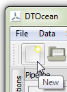
Fig. 4.1 Left-click the “New” button
The pipeline header should now display “Define scenario sections…” and a single variable will be visible, the “Device Technology Type”. The value of this variable will determine the variables required for our simulations and for filtering the list of available technologies offered to us from the database. As shown in Fig. 4.2, left click on the variable in the pipeline and then set the value to “Tidal Fixed”, as shown in Fig. 4.3.
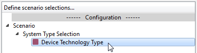
Fig. 4.2 Left-click the “Device Technology Type” variable
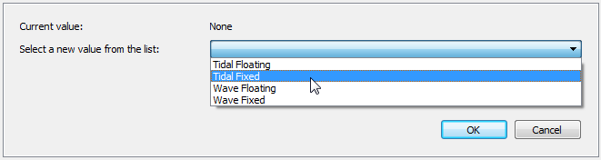
Fig. 4.3 Set the “Device Technology Type” variable to “Tidal Fixed”
To commit the chosen value, click the “OK” button in the main window, as shown in Fig. 4.4.

Fig. 4.4 Left-click the “OK” button
4.2. Connect the Database
The next step is to configure and connect the database. Open the database selection dialogue by clicking the “Select Database” button in the main toolbar, as shown in Fig. 4.5.
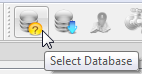
Fig. 4.5 Left-click the “Select Database” button
The select database dialogue provides a list of saved credentials for databases, the ability to add, delete or modify credentials, a means to apply the provided credentials to the current project, and a tool for dumping and loading the chosen database to and from structured files. For the purposes of this tutorial we will use the predefined “local” database credentials and modify them as required. Optionally, we can save the modifications for later reuse. First, click the “local” database in the list of available credentials, as seen in Fig. 4.6. Note, if the credentials are different to what is shown here, see the Configuration Files section.
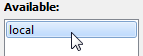
Fig. 4.6 Left-click the “local” database in the list of available databases
The saved credentials will appear in the “Credentials:” section of the dialogue and at this stage the password field (“pwd”) will be empty. Double-click the cell in the “Value” column to edit this value and add the password you chose when setting up the “dtocean_user” login role for the database. The table should look similar to Fig. 4.7 when finished. Note, if you chose a different name for the login role, then you should also edit the “user” field.
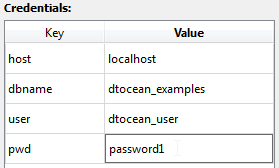
Fig. 4.7 Add the password for login role “dtocean_user” to the “pwd” field
At this point, you can optionally save the password for later use, by left-clicking the “Save” button, as shown in Fig. 4.8. As passwords are saved in plain text (in the users AppData folder), you should not save your password if you have any security concerns. In this case, add you password to the “pwd” field each time you connect to the database.
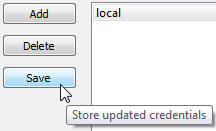
Fig. 4.8 Save the credentials by left-clicking the “Save” button
When the password (and any other field) has been correctly set, click the apply button, as shown in Fig. 4.9. The “local” database should now be shown as the current database, as in Fig. 4.10. The dialogue can now be closed by left-clicking the “Close” button.
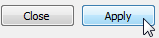
Fig. 4.9 Left-click the “Apply” button
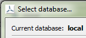
Fig. 4.10 The currently selected database is displayed
4.3. Select the Site and Device
To collect the list of available sites and the filtered list of devices (based on our technology choice), we must initiate the “pipeline” (think of this as building the pipework that our data will flow along). Click the “Initiate Pipeline” button in the toolbar, as shown in Fig. 4.11. DTOcean will now open the data requirements dialogue and check if the device type has been set. Click “OK” to close it if shows “PASSED”, otherwise click “Cancel” and go back to the Initiate the Project section. Note, you can initiate the pipeline without selecting a database, but a device type must be set.
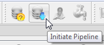
Fig. 4.11 Left-click the “Initiate Pipeline” button
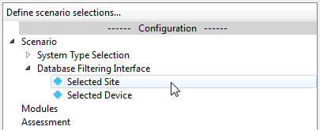
Fig. 4.12 The “Database Filtering” variables, ready to be set
The variables “Selected Site” and “Selected Device” should now appear in the “Database Filtering Interface” branch of the pipeline as shown in Fig. 4.12. Now set each variable using the values given in table Table 4.1. An example of setting the “Selected Site” variable is shown in Fig. 4.13.
Variable |
Value |
|---|---|
Selected Site |
Tacoma Narrows |
Selected Device |
RM1 Device |
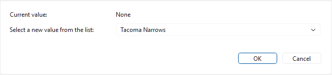
Fig. 4.13 Choose the “Tacoma Narrows” in the drop-down menu, then click “OK”
Remember to click “OK” after selecting the values to commit them. The indicators on both variables should be green, as shown in Fig. 4.14 Once a site is selected, an additional step is required to collect bathymetric data.
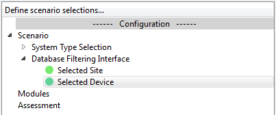
Fig. 4.14 The “Database Filtering” variables, after being set
4.4. Select the Bathymetry
In order to choose how much bathymetric data to collect from the database, we must initiate the project boundaries interface. From the main toolbar click the “Initiate Bathymetry” button, as shown in Fig. 4.15.
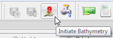
Fig. 4.15 Left-click the “Initiate Bathymetry” button
After passing the data check, the “Project Boundaries Interface” branch will now appear in the pipeline. This branch contain the variables used to define the desired lease area and cable corridor boundaries and the export cable landing point (see the Data Preparation chapter for a full explanation of these terms). The initial boundaries cover the extent of all bathymetric data for the site, but we are going to use a smaller area for this tutorial. To visualise the default boundary positions, select the “Lease Boundary” variable from the “Project Boundaries Interface” branch of the pipeline, as shown in Fig. 4.16. Then switch the interface to the plots context, using the toolbar button, as shown in Fig. 4.17.
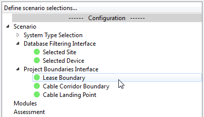
Fig. 4.16 Left-click the “Lease Boundary” variable
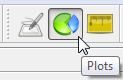
Fig. 4.17 The “plots context” is used for viewing plots
The default plot shows the lease area boundary polygon and the coordinates of its vertices. Further insight can be gained by examining all of the required boundaries together and we use a custom plot to achieve this. In the “Plot Manager” widget, above the main window, select “Design Boundaries” from the drop-down list of plots in the “Plot name:” field, as shown in Fig. 4.18. Now click the “Plot” button, as shown in Fig. 4.19, to replace the default plot (the default plot can be restored by clicking the “Default” button). A digram similar to Fig. 4.20 should be displayed.
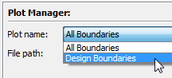
Fig. 4.18 Select the “Design Boundaries” plot in the “Plot Manager” widget
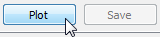
Fig. 4.19 Left-click the “Plot” button
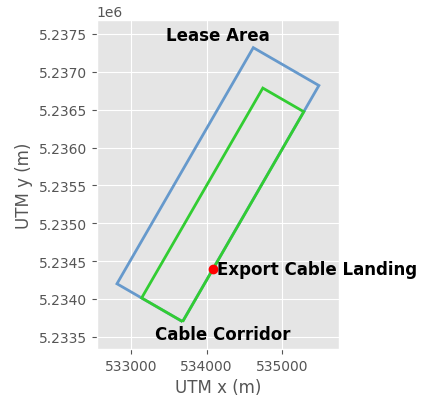
Fig. 4.20 Plot of the design boundaries and export cable landing point
We are now going to reduce the extent of the lease area and modify the cable corridor to match. This is undertaken in the “Data” context, so switch back using the toolbar button, as shown in Fig. 4.21. The data table containing the \((x,y)\) coordinates of the lease area boundary polygon vertices should now be displayed. To edit the vertices, the table must first be placed into editing mode. This is achieved by clicking the “toggle editing mode” button in the main window, as shown in Fig. 4.22.

Fig. 4.21 The “data context” is used for entering input data and viewing results
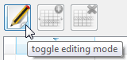
Fig. 4.22 Left-click the “toggle editing mode” button
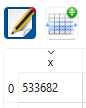
Fig. 4.23 Use the table to modify the lease area coordinates
Once the editing mode has been enabled, you can double-click on the cells in the table to edit their data. Double-click on the “x” coordinates that has value “533682” and change the value to “533885”, as shown in Fig. 4.23. Modify the remaining coordinates for the lease area boundary using the values in the table below.
Modified Lease Boundary Coordinates
x |
y |
|---|---|
533885.0 |
5234050.0 |
533020.0 |
5234555.0 |
533420.0 |
5235255.0 |
534285.0 |
5234745.0 |
Click the “OK” button after the coordinate has been changed to commit the new polygon. Now return to the plots context and open the “Design Boundaries” plot once more. The lease area should have reduced in size, as seen in Fig. 4.24 [1].
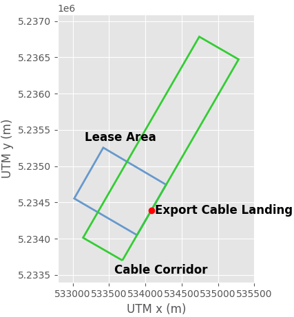
Fig. 4.24 Plot of the updated design boundaries
Important
The DTOcean suite is currently undergoing conversion from the original Python 2 code to Python 3 and not all features are available yet. Until the conversion in finished, some of the instructions below can not be completed in full.
4.5. Add Modules and Assessment
The final stage before collecting the data from the database is to choose which design modules and assessments we want for our simulation. In this example, we add the first three design modules (hydrodynamics, electrical sub-systems, and mooring and foundations) and the economics assessment module. To add design modules, click the “Add Modules” button in the main toolbar, as seen in Fig. 4.25.
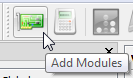
Fig. 4.25 Left-click the “Add Modules” button
A shuttle dialogue will open which allows you to select which modules are required for the simulation. Select the desired module from the “Available:” list, and click the “Add” button, as seen in Fig. 4.26. The figure shows how the dialogue should look once the three modules are selected. If you accidentally add the wrong module, select it in the “Selected:” list and click the “Remove” button to deselect it. Click the “OK” button to accept your choice.
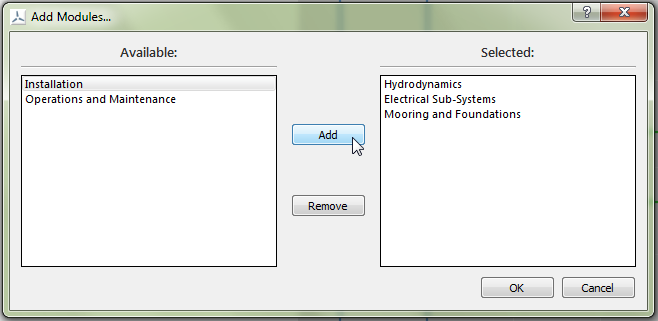
Fig. 4.26 Add Hydrodynamics”, “Electrical Sub-Systems” and “Mooring and Foundations” to the list of selected modules
A similar process is used for adding assessments. Click the “Add Assessment” button, as shown in Fig. 4.27 and use the shuttle to select the “Economics” assessment, as shown in Fig. 4.28. Once again, click “OK” to accept the choice.
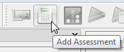
Fig. 4.27 Left-click the “Add Assessment” button
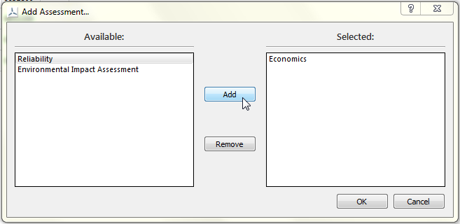
Fig. 4.28 Add “Economics” to the list of selected assessments
4.6. Initiate the Dataflow
The system is now ready to determine which variables are required to run the chosen modules and assessments and to collect available data from the database based on our selections. In DTOcean, this process is referred to as “initiating the dataflow”, and the “Initiate Dataflow” button, in the main toolbar as seen in Fig. 4.29, is used to start the process.
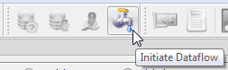
Fig. 4.29 Left-click the “Initiate Dataflow” button
Once the process has completed the pipeline will populate with the variables required to run each module (and assessment) and indicate their status using icons with coloured shapes. A green square indicates that the variable contains data (satisfied), a blue diamond indicates that the variable contains no data but does not have to be satisfied (optional) and a red square indicates that the variable does not yet contain data but some must be added before the module can execute (required). The variables for the Hydrodynamics module should appear like Fig. 4.30.
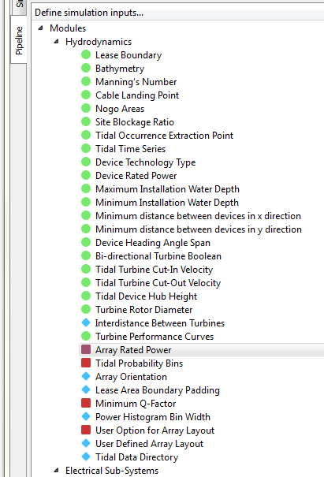
Fig. 4.30 Variables required to run the “Hydrodynamics” module and their status indicators
4.7. Add Project Data
The DTOcean database does not contain variables that are specific only to the project being simulated and these must be added prior to execution of our simulation. Table 4.2 provides a list of recommended values for all required and some optional variables. Note that satisfying optional variables may be required for the module to execute correctly for a particular simulation, as is the case here.
Branch |
Variable |
Value |
|---|---|---|
Hydrodynamics |
Tidal Occurrence Extraction Point |
(533750, 5234700) |
Hydrodynamics |
Tidal Probability Bins |
20 |
Hydrodynamics |
Array Rated Power |
11 |
Hydrodynamics |
Lease Area Boundary Padding |
20 |
Hydrodynamics |
Minimum Q-Factor |
0.9 |
Hydrodynamics |
Power Histogram Bin Width |
0.05 |
Hydrodynamics |
User Option for Array Layout |
Staggered |
Electrical Sub-Systems |
Network Configuration |
Radial |
Electrical Sub-Systems |
Maximum Seabed Gradient |
11.25 |
Mooring and Foundations |
Foundation Safety Factor |
3.6 |
Mooring and Foundations |
Grout Strength Safety Factor |
3.6 |
Mooring and Foundations |
Concrete Cost per kg |
0.05 |
Mooring and Foundations |
Grout Cost per kg |
0.05 |
Mooring and Foundations |
Steel Cost per kg |
4 |
When entering the values, ensure that the Data Context is active (the View menu is used to change contexts). Also, using the variable Filter will make finding the variables much easier.
4.8. Execute the Simulation
After the variables have been set, the process described from the Execute the Simulation section of the Getting Started 1: Example Project chapter can be used to execute the simulation and inspect the results. The expected total CAPEX should be around 12 million Euro.
This completes this tutorial. For information about preparing and adding new data to the database please see the Data Preparation chapter.
Footnotes